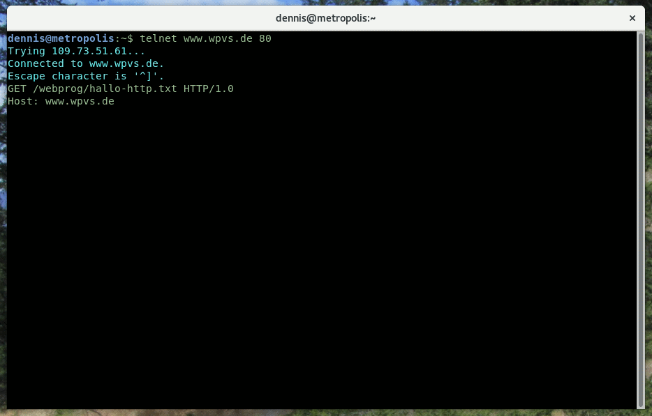

{
"type": "success",
"message": "Feedback wurde gespeichert",
}
Response Body
Hier wollen wir uns anschauen, welche Daten beim Senden einer HTTP-Anfrage „über die Leitung gehen”.
Wir starten mit einer leeren Konsole. Du kennst doch die Konsole deines Betriebssystems, oder? 🐒
Daraufhin meldet telnet, dass die Verbindung erfolgreich aufgebaut wurde und der Server wartet
auf Eingaben.
Wir schicken eine GET-Anfrage zum Abruf der Datei /webprog/hallo-http.txt.
Als nächstes folgt das Header Field Host, da es mehrere Domains mit derselben IP-Adresse gibt.
Das war es dann auch schon mit den Header Fields. Zum Abschluss folgt deshalb eine Leerzeile.

Und schon schickt uns der Server die Antwort und trennt die Verbindung.
So einfach ist das. 👍🏻 Allerdings nur mit HTTP/1, denn HTTP/2 kodiert die Nachrichten in einer kompakteren
Binärform. Schaue dir deshalb gleich das Video auf dem nächsten Tabreiter an, um zu erfahren, wie HTTP-Aufrufe
richtig getestet werden.
Browser sind nicht die einzigen Programme, die HTTP-Anfragen versenden.
Eine beliebte, grafische Anwendung zum Testen von HTTP-Anfragen ist
Postman.
In Scripts und auf der Kommandozeile wird häufig curl
verwendet.
HTTPie ist jedoch einfacher zu nutzen
und genauso leistungsfähig.
¹ Optional
GET
Inhalte vom Server abrufen
Die Anfrage darf keinen Request Body enthalten
Der Server antwortet mit dem gewünschten Inhalt oder einer Fehlerbeschreibung
POST
Daten zur Verarbeitung an den Server schicken
Wird häufig dazu verwende, neue Inhalte auf dem Server abzulegen
Der Server antwortet mit dem gespeicherten Inhalt oder einer Fehlerbeschreibung
PUT
Wird häufig verwendet, um vorhandene Daten auf dem Server zu aktualisieren
Der Inhalt der Datei muss im Request Body mitgeschickt werden
Der Server antwortet mit dem gespeicherten Inhalt oder einer Fehlerbeschreibung
DELETE
Daten auf dem Server löschen
Die Anfrage darf keinen Request Body enthalten
Der Server antwortet mit einer Bestätigung oder einer Fehlberbeschreibung
Seltener verwendete Verben
HEAD, OPTIONS, TRACE, PATCH
1xx: Informationen
Zwischenmeldung, um die Verbindung aufrecht zu erhalten
Verhindert, dass die Verbindung durch einen Timeout vorzeitig beendet wird
2xx: Erfolgreicher Abschluss
Die Anfrage wurde erfolgreich bearbeitet
200 OK: Alles roger! Der Response Body beinhaltet die gewünschten Daten 👌🏼
201 Created: Der an den Server gesendete Datensatz wurde erfolgreich angelegt
202 Accepted: Die Anfrage wurde empfangen, wird aber erst später bearbeitet
204 No Content: Alles in Ordnung. Der Body enthält jedoch keine Daten
…
3xx: Umleitung
Es sind weitere Aktionen vom Client notwendig
300 Multiple Choice: Die Anfrage war nicht eindeutig genug
301 Moved Permanently: Umleitung des Clients auf eine andere URL
…
4xx: Client Fehler
Der Client hat etwas falsch gemacht; die Verarbeitung wird abgelehnt
400 Bad Request: Ungültige bzw. fehlerhafte Anfrage
401 Unauthorized: Keine Berechtigung für diese Aktion
403 Forbidden: Die Aktion ist prinzipiell nicht erlaubt
404 Not Found: Der gesuchte Inhalt wurde nicht gefunden
409 Conflict: Der übermittelte Inhalt wiederspricht anderen Daten
…
5xx: Server Fehler
Anfrage kann aufgrund eines Serverfehlers nicht bearbeitet werden
500 Internal Server Error: Schwerer technischer Fehler, alles ist kaputt! 🗑️
501 Not Implemented: Die Funktion ist nicht verfügbar
503 Service Unavailable: Temporärer Fehler, bitte später nochmal versuchen
…
Anfrage
Host
Domain des aufgerufenen Servers, um zwischen mehreren Domains mit derselben IP-Adresse unterscheiden zu können
User-Agent
Name, Version und Betriebssystem des Clients, wobei die Angaben meistens nicht stimmen
Content-Type
MIME-Type und ggf. Zeichensatz der im Body enthaltenen Daten
Accept
MIME-Type der erwarteten Antwort
Accept-Language
Erwartete Sprachen (deutsch, englisch, …) der Antwort
Connection
Hinweise zur Aufrechterhaltung der TCP/IP-Verbindung für weitere Anfragen
Antwort
Content-Type
MIME-Type und ggf. Zeichensatz der im Body enthaltenen Daten
Location
Umleitung auf eine neue URL bzw. URL der gespeicherten Daten
Cache-Control
Hinweise zur Pufferung der Antwort im Browsercache
Last-Modified
Datum und Uhrzeit der letzten Änderung an den Daten
HTTP/0.9
Dies war die ursprüngliche von Tim Berners-Lee entwickelte HTTP-Version, wie sie 1991 veröffentlicht wurde.
In dieser Version gab es nur GET-Anfragen und noch keine Header Fields. Eine Anfrage bestand daher lediglich
aus einer Zeile:
GET /index.html
Die Antwort des Servers beinhalte nur den Inhalt der abgerufenen Datei, sonst nichts.
HTTP/1.0
1996 wurde HTTP/1.0 veröffentlicht. Ab hier haben die HTTP-Nachrichten den oben gezeigten Aufbau.
HTTP/1.1
Diese Version wurde 1999 veröffentlicht und brachte weitreichende Verbesserungen. Unter anderem
die Möglichkeit, die Verbindung zwischen zwei Anfragen offen zu halten. Denn zuvor wurde die Verbindung
nach jeder Antwort automatisch getrennt. Da aber gerade der Verbindungsaufbau bei TCP/IP sehr langsam ist,
führte dies zu langen Wartezeiten, wenn mehrere Dateien vom selben Server abgerufen werden mussten.
HTTP/2
2015 wurde HTTP/2 offiziell verabschiedet. In seinen Grundzügen basiert es auf dem von Google entwickelten
SPDY-Protokoll. Die Inhalte der HTTP-Nachrichten sind weitgehend gleich geblieben, jedoch werden sie nicht
mehr in der oben gezeigten Textform kodiert. Stattdessen kommt ein kompaktes und in vielen Dingen eindeutiger
spezifiziertes Binärformat zum Einsatz.¹
Als weitere größere Neuerung führt HTTP/2 Server Push ein, wodurch der Server beim Abruf einer
HTML-Seite selbstständig weitere Dateien an den Browser schicken kann. Somit können Stylesheets, Skripte
und Bilder schon an den Browser geschickt werden, bevor dieser überhaupt weiß, dass er sie benötigen wird.
Stand 2020 hat sich HTTP/2 noch nicht vollständig gegen HTTP/1 durchgesetzt. Sehr viele Webseiten verwenden
weiterhin HTTP/1. Inzwischen unterstützen aber alle Server, Browser und Frameworks das neue Protokoll.
¹ Beispielsweise war bei HTTP/1.x nie definiert, welche Bytefolge ein Zeilenende markiert.
ADANETARPANETDarker NetGlobal Web1959196319691971internet.comgraphics.comworldwideweb.comcern.comsymbolics.comCERN: Europäisches KernforschungszentrumESA: Europäische WeltraumbehördeDLR: Deutsches Zentrum für Luft- und RaumfahrtKIT: Karlsruhe Institute of TechnologyDHBW: Duale Hochschule Baden-WürttembergEin nicht-linearer Text mit Absprüngen und VerlinkungenEin technisch-orientierter Text mit multimedialen InhaltenEin für Computer lesbarer Quelltext nach der CompilierungEin besonders effizient komprimierter, natürlichsprachlicher TextWebSocketsDas AJAX-PrinzipDas HTML-FormatDen Aufbau einer URLClientseitige WebanwendungenDas HTTP-ÜbertragungsprotokollCSS-basierte StylesheetsTCP/IP-fähige BetriebssystemeCommodore C64Apple IIAtari STNeXT CubeSPARCstationDEC VAXPDP-11IBM AS/400SGI IndigoIntel 80486LCARSkarlsruhe.dhbw.dewww.karlsruhe.dhbw.dehttps://www.karlsruhe.dhbw.dehttps://www.karlsruhe.dhbw.de/https://www.karlsruhe.dhbw.de/dhbw-karlsruhe/https://www.karlsruhe.dhbw.de/en/general/about-us.htmlhttps://www.karlsruhe.dhbw.de/en/general/about-us.html?lang=en